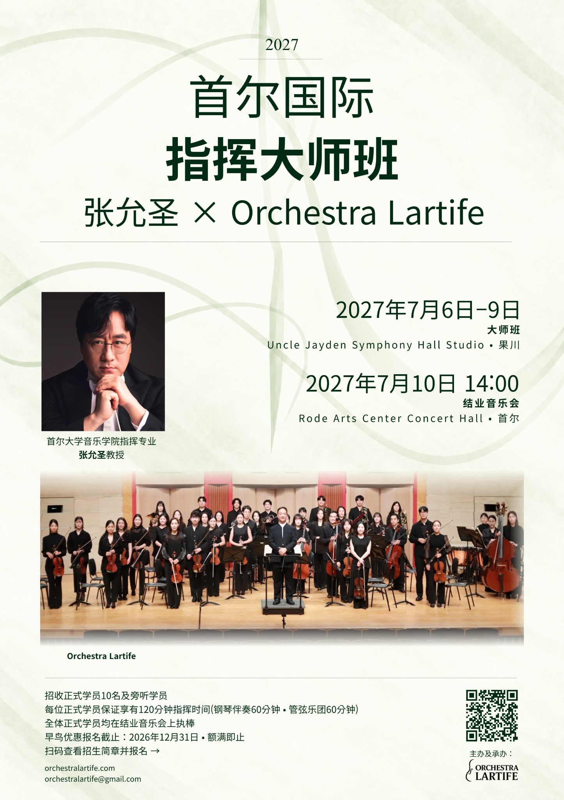

06–09 JULY · GWACHEON
06–09 JULY · GWACHEONUncle Jayden Symphony Hall Studio
韩国京畿道果川市秋史路92-19
엉클제이든 심포니홀 스튜디오 · 경기도 과천시 추사로 92-19
查看地图 ↗报名进行中
2027年7月6日–10日
在张允圣教授的指导下，从钢琴伴奏指挥实践到管弦乐团实习，再到与Orchestra Lartife合作的结业音乐会，开展为期五天的学习。
2026年10月26日起报名 · Active名额满即截止

查看官方海报 · 中文 ↗THE MASTERCLASS
7月6–7日为钢琴伴奏课程，8–9日为管弦乐团课程，10日举行最终排练及结业音乐会。每位Active学员保证获得120分钟指挥实践时间，结业音乐会排练及正式演出时间另计，不包含在这120分钟内。

PROFESSOR
首尔大学音乐学院指挥专业教授
张允圣在首尔艺术高中及首尔大学学习作曲，并修完首尔大学研究生院指挥专业课程。赴维也纳留学期间，于1993年获得在圣彼得堡举行的首届普罗科菲耶夫国际指挥比赛第二名，1997年获得东京国际指挥比赛第二名（第一名空缺）。曾在韩国及日本多个乐团担任指挥职务，现任首尔大学音乐学院指挥专业教授。
张允圣在首尔艺术高中及首尔大学音乐学院主修作曲，并修完首尔大学研究生院指挥专业课程。此后赴奥地利维也纳国立音乐大学留学。1993年，获在俄罗斯圣彼得堡举行的首届普罗科菲耶夫国际指挥比赛第二名；1997年，获东京国际指挥比赛第二名（第一名空缺）。
他曾执棒俄罗斯的圣彼得堡爱乐乐团、圣彼得堡交响乐团、圣彼得堡室内乐团，日本的东京交响乐团、大阪爱乐乐团、仙台爱乐乐团，奥地利的维也纳音乐会协会乐团、克拉根福交响乐团，德国的开姆尼茨罗伯特·舒曼爱乐乐团、纽伦堡交响乐团，意大利的罗马交响乐团，西班牙马德里的圣塞西莉亚古典管弦乐团，匈牙利的MÁV交响乐团，捷克的布拉格广播交响乐团、布拉格交响乐团、布尔诺交响乐团、雅纳切克爱乐乐团，波兰的克拉科夫广播交响乐团，乌克兰的哈尔科夫交响乐团，以及塞尔维亚的贝尔格莱德交响乐团等。
巡演经历包括与纽伦堡交响乐团赴德国四座城市演出、与KBS交响乐团赴日本巡演、与马林斯基歌剧院管弦乐团及圣彼得堡室内乐团赴韩国巡演，以及与布尔诺爱乐乐团和雅纳切克爱乐乐团赴奥地利克拉根福、圣珀尔滕巡演。他还曾与环球芭蕾舞团合作，在英国伦敦萨德勒之井剧院、美国芝加哥抒情歌剧院及加拿大温哥华伊丽莎白女王剧院指挥芭蕾演出，并参与首尔市歌剧团的东京、大阪巡演，演出领域涵盖交响乐、芭蕾音乐和歌剧。
1995年，他在克拉科夫指挥了潘德列茨基第五交响曲《KOREA》的欧洲首演。他还指挥了勋伯格《古雷之歌》、卡塞拉第二交响曲、布洛赫升C小调交响曲的韩国首演，以及众多韩国作曲家新作的首演，曲目范围横跨古典至近现代音乐。
自指挥奥地利Neustudio Bühne上演莫扎特《开罗之鹅》起，他的歌剧曲目包括莫扎特《费加罗的婚礼》《唐·乔万尼》《女人心》《魔笛》，罗西尼《婚姻契约》《塞维利亚的理发师》，洪佩尔丁克《汉塞尔与格蕾特》，多尼采蒂《爱的甘醇》，威尔第《弄臣》《茶花女》《命运之力》《纳布科》，普契尼《三联剧》《蝴蝶夫人》《波希米亚人》《托斯卡》，比才《卡门》，布里顿《仲夏夜之梦》以及奥涅格《火刑柱上的贞德》等，持续活跃于歌剧指挥领域。
他曾任蔚山、昌原、大田市立交响乐团及富川爱乐乐团常任指挥、日本大阪学院歌剧院专任指挥、首尔市立交响乐团首席客座指挥及军浦Prime爱乐乐团专任指挥，并通过日本Camerata唱片公司发行录音。现任首尔大学音乐学院作曲系指挥专业教授。
06–10 JULY 2027
| 日期 | 课程内容 | 时间 · 韩国时间 | 场地 |
|---|---|---|---|
| 2027.07.06 | 钢琴伴奏大师班 | 09:00 开班说明 09:30–12:30 14:00–17:00 | Uncle Jayden Symphony Hall Studio |
| 2027.07.07 | 钢琴伴奏大师班 | 09:30–12:30 14:00–17:00 | Uncle Jayden Symphony Hall Studio |
| 2027.07.08 | 管弦乐团大师班 | 09:30–12:30 14:00–17:00 | Uncle Jayden Symphony Hall Studio |
| 2027.07.09 | 管弦乐团大师班 | 09:30–12:30 14:00–17:00 | Uncle Jayden Symphony Hall Studio |
| 2027.07.10 | 最终排练及结业音乐会 | 10:30–13:00 排练 14:00 结业音乐会 | Rode Arts Center Concert Hall |
所有时间均为韩国标准时间（KST，比北京时间快1小时）。详细日程及个人指挥顺序可能根据实际情况调整。
MOZART & BEETHOVEN
| 作品 | 指定版本 |
|---|---|
| W. A. 莫扎特 —《唐·乔万尼》K. 527 序曲 | Breitkopf & Härtel |
| W. A. 莫扎特 — D大调第三十五交响曲 K. 385《哈夫纳》 | Breitkopf & Härtel |
| L. v. 贝多芬 —《科里奥兰》序曲 Op. 62 | G. Henle Verlag |
| L. v. 贝多芬 — D大调第二交响曲 Op. 36 | Bärenreiter |
Active学员须准备全部四首作品。课程中可选择希望接受指导的作品；结业音乐会的作品及乐章由指导教授分配。
PARTICIPATION
报名前请阅读以下参加条件及韩文招生简章PDF。
| 类别 | 费用 · 韩元 |
|---|---|
| 早鸟优惠 · 至2026年12月31日 | KRW 2,800,000 |
| 常规费用 | KRW 3,000,000 |
| 结业音乐会官方录像 · 自选 | 另加60,000韩元 |
官方录像包含完整结业音乐会及学员本人的指挥片段。录取后随学费一并支付。结业音乐会当天禁止使用个人设备录像。
录取通知不等于最终注册。即使缴费期限未到，10人完成缴费注册后仍将截止。届时将通知尚未缴费的录取者，不再收取额外付款。逾期未缴费者注册资格终止。
| 申请取消日期 | 退款比例 |
|---|---|
| 截至2027年3月31日 | 100% |
| 2027年4月1日–30日 | 70% |
| 2027年5月1日–31日 | 50% |
| 2027年6月1日起 | 不予退款 |
面向国内外指挥专业学生、对指挥感兴趣的音乐人士及普通爱好者。可选择单日或全五天参加。
| 类别 | 费用 · 韩元 |
|---|---|
| 1天 | KRW 70,000 |
| 2天 | KRW 140,000 |
| 3天 | KRW 210,000 |
| 4天 | KRW 280,000 |
| 全5天 | KRW 300,000 |
可旁听所选日期的课程及排练。7月10日旁听费用包含结业音乐会排练观摩及正式演出观赏。音乐会普通观众票价为30,000韩元。
提交在线申请 → 选择日期 → 邮件收到缴费说明 → 缴费 → 到账后确认注册
| 申请取消日期 | 退款比例 |
|---|---|
| 截至2027年6月30日 | 100% |
| 2027年7月1日–3日 | 70% |
| 2027年7月4日–5日 | 50% |
| 2027年7月6日起 | 不予退款 |
如因主办方原因取消活动，Active及Passive参加费全额退还。官方录像提供前取消该项目，可退还录像费用。

2027 · SEOUL INTERNATIONAL CONDUCTING MASTERCLASS
2026年10月26日起报名 · Active名额满即截止